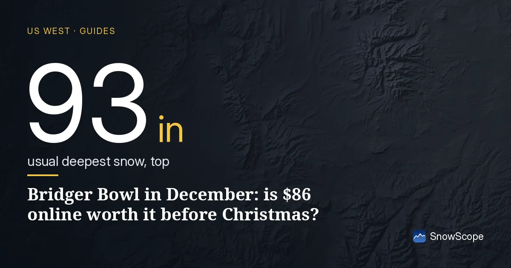
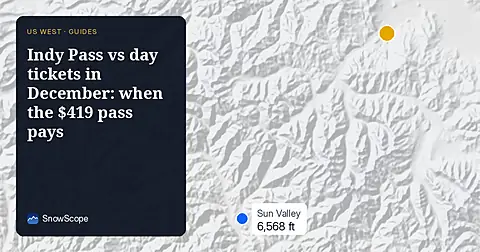

Bridger Bowl in December: is $86 online worth it before Christmas?
Bridger Bowl, the nonprofit near Bozeman, prices its full day at $86 online—no weekend markup, no tricks. The catch is timing. Mid-mountain reaches 20 in (50 cm) on 15 December in only half of past winters, but Christmas week brings good snow in 78 % of years.
See the live snow forecast for Bridger Bowl in the SnowScope appSnow depth, powder alerts and the 3D map, free.
The hill and the ticket
Bridger sits in the Bridger Range north of Bozeman with 12 lifts and roughly 26 mi (42 km) of runs between 6,120 ft (1,865 m) and 8,060 ft (2,457 m). The upper slopes are steep; the lower runs are long and gentle.
A full day costs $86 online or $99 at the window for adults aged 19 to 69. The afternoon ticket from 12:30 is $74. If you plan three visits, the Any Day Pack costs $230 for three non-consecutive days with no blackout dates.

Early December: thin and uneven
Snow arrives reliably by mid-October at mid-mountain (7,090 ft / 2,161 m), but December builds slowly. On a typical 1 December, mid-mountain has 15 in (37 cm). By 15 December, that rises to 20 in (51 cm)—the threshold for good skiing—but only half of past winters reached that depth by that date.
The base, at 6,120 ft (1,865 m), is thinner: a typical 15 December shows 12 in (31 cm), and only 24 % of winters hit 20 in there. The top (8,060 ft / 2,457 m) fares better with 29 in (73 cm) on 15 December in 78 % of winters. Early-season snow is scattered, and rocks or ground may show through at lower elevations.

Christmas week: the turning point
By Christmas Day, mid-mountain climbs to a typical 22 in (57 cm), and 72 % of winters exceed 20 in. The top reaches 31 in (79 cm) in 85 % of winters. By 31 December, the odds strengthen again: mid-mountain averages 27 in (69 cm) in 76 % of winters, and the top 35 in (88 cm) in 87 %.
In the week of 21–27 December, 78 % of past winters delivered good snow to mid-mountain. That is the pivot from risky to reliable. If you can wait until late December, Bridger's steep terrain and clear pricing reward the patience.
How this winter compares
Past winters show a gradual decline in December snow. The first 15 winters in our record (1980–81 to 1994–95) averaged 29 in (73 cm) at mid-mountain on 15 December, with 67 % above 20 in. The last 15 winters (2011–12 to 2025–26) averaged 19 in (50 cm), with 47 %. Last winter had 18 in (45 cm) on that date, below the recent norm.
This trend reflects wider changes in the region, not Bridger alone. The mountain still sees reliable accumulation from January onward, when the median peak depth at mid-mountain is 56 in (141 cm).
Bridger versus neighbours
Montana Snowbowl, west of Missoula, charges $78 on weekdays and $85 on weekends. Its mid-mountain (6,260 ft / 1,909 m) averages 30 in (76 cm) on 15 December in 83 % of winters—a stronger early-season bet. Snow King in Jackson charges $100 and averages 28 in (71 cm) with 87 % odds.
For an early-December day trip from Bozeman, Snowbowl edges Bridger on snow depth. For Christmas week onward, Bridger's $86 online rate and expert terrain win out. The difference between $78 and $86 matters less when snow odds jump from 50 % to 78 %.
What to bring and check
Bridger Canyon Road can freeze after powder mornings: carry snow tires and expect slow traffic. Plan an early start or accept delays. The upper mountain is steep, serious terrain that needs avalanche gear, a partner, and a current avalanche forecast—check the Gallatin National Forest Avalanche Center before you go off-piste.
Tips for skiers
- Buy your ticket online at $86, never at the window ($99). Over a day's driving, that savings pays for a beer.
- Avoid the gamble: skip 1–15 December unless you are chasing the top 8,060 ft (2,457 m), where 78 % of winters have good snow. Plan for Christmas week onward instead.
- Use the Any Day Pack ($230 for three days) to split visits across late December and January, when snow is deeper and more reliable.
- Bridger Canyon Road freezes easily. Leave early, carry snow tires, and pack patience on the drive home.
- Upper terrain requires avalanche training and gear. Consult the official avalanche forecast before leaving the lift area.
About these numbers
Resort snow depths are the deepest snow on the resort's upper slopes on the date shown; they are estimates for an area, not a measurement at one point. Forecasts can change. Always read the official avalanche bulletin before going off-piste.
Official avalanche bulletins: Gallatin National Forest Avalanche Center
Cite this report
For research, teaching or the press: the numbers and charts are free to reuse under CC BY 4.0 with this citation.
SnowScope (2026), Bridger Bowl in December: is $86 online worth it before Christmas?, https://snowscope.app/blog/en/2026/11/bridger-bowl-bozeman-december-ski-cost.html, accessed 2026-11-15
SnowScope (Atlas Labs). (2026, November 15). Bridger Bowl in December: is $86 online worth it before Christmas?. SnowScope snow reports. https://snowscope.app/blog/en/2026/11/bridger-bowl-bozeman-december-ski-cost.html
BibTeX
@misc{snowscope2026bridgerbowlbozemandecemb,
author = {{SnowScope (Atlas Labs)}},
title = {Bridger Bowl in December: is $86 online worth it before Christmas?},
year = {2026},
month = nov,
howpublished = {\url{https://snowscope.app/blog/en/2026/11/bridger-bowl-bozeman-december-ski-cost.html}},
note = {Published 2026-11-15 09:34 UTC; accessed 2026-11-15}
}· CC BY 4.0 · Methods, data and tools →
Bridger Bowl: snow and temperature by height, this winter vs last (tools) →
Follow Bridger Bowl
Free: a message when fresh snow is coming, and the forecast every morning.
More snow reports

For a December trip, is the Indy Pass worth $419? We checked seven member areas and their snow odds: the pass pays on the third area visited.

Heavenly, Sierra-at-Tahoe and Mt. Rose have more snow on 19 November than in any winter since 1980-81. How much fell, the measured gauges, the weather behind it and the best days to go.